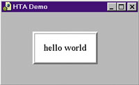
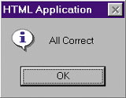
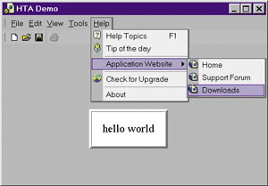
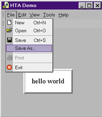
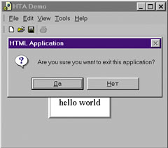

Виталий Сизов
Первые упоминания о возможности создания приложений на основе кодов HTML появились еще в середине 1999 г. По времени это совпадает с выпуском 5-й версии браузера Microsoft Internet Explorer. Начиная именно с этой версии, корпорация Microsoft вводит в обращение термин HTML Applications, и в ее продуктах появляются средства поддержки новой технологии.
За прошедшие с той поры три года немногочисленные читатели, обнаружившие в MSDN описание этой технологии, окрестили ее "спящей". Это определение отражает тот факт, что весьма эффектная технология с многообещающими возможностями до сих пор остается невостребованной широким кругом разработчиков ПО.
Объяснение подобному положению вещей дают сами специалисты из Microsoft. Оказывается, HTML-приложения - это один из первых этапов работы над проектом, который сейчас известен как .NET Framework. Сказанное совсем не означает, что о HTML-приложениях следует забыть и полностью переключиться на освоение технологий .NET. Удивительная простота, с которой создаются профессиональные продукты, при полном отсутствии требований к инструментарию может обеспечить HTML-приложениям солидную нишу на рынке ПО.
Простой пример
Рассмотрим пример кода. Это HTML-документ, проще которого не бывает.
<HTML>
<HEAD>
<TITLE> Hello </TITLE>
</HEAD>
<BODY>
hello world
</BODY>
</HTML>
|
Нетрудно представить себе, как выглядит этот документ, если открыть его в браузере. Но достаточно сохранить приведенный код в файле с расширением .HTA, чтобы произошла метаморфоза. Если открыть такой файл на локальном компьютере, то он будет выглядеть, как настоящее Windows-приложение - отдельное окно с собственной иконкой и никаких элементов интерфейса Internet Explorer.
Если же поместить этот файл на сервер, а затем попытаться открыть его с помощью браузера, то последует сообщение системы безопасности, предлагающее сохранить этот файл на диске, как если бы был адресован настоящий исполняемый exe-файл.
В этом и заключается секрет HTML-приложений. Простая замена расширения .HTML на .HTA снимает защиту операционной системы, применяемую к файлам, полученным из Интернета. HTML-файлы могут свободно обращаться к любым ресурсам локального компьютера, например, создавать и удалять файлы и папки или переписывать информацию в системном реестре.
Таким образом, чтобы превратить "безобидный" HTML-документ в потенциально опасное приложение, достаточно просто изменить расширение у текстового файла, хранящего HTML-код. Не требуются никакие системы программирования, компиляторы и профессиональные программисты. Для того чтобы разрушить локальную вычислительную систему, достаточно редактора Notepad и навыков работы с кодом HTML и JavaScript, полученных на школьных уроках информатики или путем самостоятельного изучения "изнанки" Web-страниц.
Кроме специального расширения, HTML-приложения имеют еще одно отличие от обычных
Web-страниц, на этот раз в самом языке. Это элемент , размещаемый
в разделе
<HEAD>
Вот как будет выглядеть наш простой пример, приведенный к канонической форме
HTML-приложения.
<HTML>
<HEAD>
<TITLE>HTA Demo</TITLE>
<HTA:APPLICATION ID="oHTA"
APPLICATIONNAME="myApp"
BORDER="thick"
BORDERSTYLE="normal"
CAPTION="yes"
CONTEXTMENU="yes"
ICON="webpage.ico"
INNERBORDER="yes"
MAXIMIZEBUTTON="yes"
MINIMIZEBUTTON="yes"
NAVIGABLE="no"
SCROLL="auto"
SCROLLFLAT="no"
SELECTION="yes"
SHOWINTASKBAR="yes"
SINGLEINSTANCE="yes"
SYSMENU="yes"
VERSION="1.0"
WINDOWSTATE="normal"
/>
</HEAD>
<BODY bgcolor=buttonface text=menutext
style="border:none" scroll="auto">
<TABLE WIDTH="100%" HEIGHT="100%">
<TR>
<TD ALIGN="center" VALIGN="middle">
<TABLE CELLPADDING="20" CELLSPACING="0"
BACKGROUND="" border=4>
<TR>
<TD ALIGN="center" VALIGN="middle"
style="BACKGROUND-COLOR: white">
hello world
</TD>
</TR>
</TABLE>
</TD>
</TR>
</TABLE>
</BODY>
</HTML>
|
Все существующие на сегодняшний день атрибуты элемента приведены
в коде примера. По мнемонике имен видно, что атрибуты описывают либо внешнее
оформление, либо поведение только самого окна приложения. Часть параметров можно
задать и с помощью обычных средств, например, атрибута STYLE для элемента
<BODY>
Дело в том, что сложившийся к настоящему времени набор атрибутов элемента
расширялся с каждой новой версией Internet Explorer, и часть
параметров может не работать в "старых" версиях операционного окружения.
Чтобы сделать пример более наглядным, видимый текст нашего приложения помещен в пару таблиц. Это позволяет продемонстрировать, что HTML-приложение может действительно выглядеть как "настоящее", в данном случае как окно стандартного диалога, используемого в системах программирования C++ и Visual Basic (рис. 1).
|  |
Рис. 1. HTML-приложение в виде окна стандартного диалога.
|
Использование системных ресурсов
Для того, чтобы заставить HTML-приложение не только выглядеть, но и функционировать, "как настоящее", используется JScript или VBScript. Попробуем решить типичную задачу, которую часто приходится решать профессиональным программистам. Необходимо, чтобы приложение запоминало размеры и позицию окна, выбранные пользователем, и восстанавливало их при повторном запуске. Для этого, как правило, используется системный реестр Windows, хранящий текущие параметры приложения.
Прежде всего добавим в HTA-файл нашего примера строку, указывающую на присутствие в проекте JScript:
<SCRIPT language="JScript" src="api.js"></SCRIPT>
Для решения поставленной задачи потребуется реализовать два обработчика событий: при закрытии приложения записать координаты окна в системный реестр, а при открытии - прочитать значения из реестра и восстановить положение и размеры окна.
Как водится, начнем программу с введения некоторых глобальных переменных.
// объектные переменные
var oFso; // Scripting.FileSystemObject
var oWshShell; // WScript.Shell
// ключ для системного реестра
var baseKey = "HKLM\\Software\\Domestic Software _
\\HTML Application\\Settings\\";
// глобальные переменные
var isProgerror = false; // флаг ошибки
var sApptitle = "HTML Application";
var nTitleHeight = 24; // высота заголовка
// окна сообщения
var sMsg_all_correct = "All Correct";
|
Первые две объектные переменные исключительно важны. Именно с их помощью осуществляется связь приложения с ресурсами операционной системы. К выбору ключа для системного реестра также следует отнестись очень внимательно, чтобы не нарушать принятые в Windows соглашения.
Теперь можно запрограммировать и первый обработчик событий.
// обработчик события Load
function window.onload()
{
try{
// создание объектов
oFso = new ActiveXObject("Scripting.FileSystemObject");
oWshShell = new ActiveXObject("WScript.Shell");
}
catch(e){
// отображение диалога о непригодности системы
window.showModalDialog("wsh.win", null,
"dialogWidth:500px;dialogHeight:410px;
center:1;scroll:0;help:0;status:0");
isProgerror = true;
window.setTimeout('window.close()', 200);
return;
}
// восстановление параметров окна
restore_settings();
// сообщение об успешной инициализации
oWshShell.Popup(sMsg_all_correct, 0, sApptitle, 64);
}
|
Как видно из приведенного примера, первое действие, которое пытается выполнить приложение после загрузки, - это создание глобальных объектов, с помощью которых в дальнейшем будет осуществляться связь с системными ресурсами и файловый ввод-вывод. Если это действие выполнить не удается, то дальнейшая работа приложения бессмысленна. Типичная реакция на непригодность системы - вывод сообщения, в котором разъясняются причины неудачи и даются советы по устранению ошибок. Обычно для этой цели готовится специальный документ - разумеется, в формате HTML, который отображается в окне модального диалога. В приведенном примере это файл wsh.win, названный так, чтобы у пользователя не возникало желания открывать его вне связи с родительским приложением.
Суть выводимого сообщения сводится к тому, что в системе отсутствует компонент
Windows Scripting Host (WSH), обычно устанавливаемый вместе с Microsoft Internet
Explorer версии 5 и выше. WSH можно сгрузить и установить с узла http://www.microsoft.com/msdownload/vbscript/scripting.asp
в составе Microsoft Scripting Engine.
Дополнительно к сообщению об аварийном завершении предусмотрена установка флага ошибки isProgerror = true. Это делается с тем, чтобы проинформировать обработчики событий Unload о невозможности использования глобальных объектов.
Если же с WSH все в порядке, то начинается нормальная работа приложения. В приведенном примере это вызов функции restore_settings(), которую мы запрограммируем позже, и вывод сообщения об успешной инициализации. Способ вывода этого сообщения весьма поучителен. Используется метод Popup только что созданного объекта oWshShell. Этот метод - полный аналог хорошо известных всем Windows-программистам функций AfxMessagebox (C++) и MsgBox (Visual Basic). В приведенном примере выводится информационное сообщение с единственной кнопкой "OK" (рис. 2).
|  |
Рис. 2. Результат вызова метода Popup объекта WScript.Shell.
|
Второй обработчик событий достаточно прост:
// обработчик события BeforeUnload
function window.onbeforeunload()
{
if (!isProgerror) {
store_settings();
// вывод диалога "Вы уверены..."
return oHTA.commandLine;
}
}
|
Здесь store_settings - будущая функция, сохраняющая параметры окна в системном реестре. Она вызывается только в случае успешной инициализации глобальных объектов системного окружения. Дополнительно демонстрируется стандартная возможность обработчика события BeforeUnload - формирование диалога с вопросом "Вы действительно хотите уйти с этой страницы?" - и способ извлечения свойств HTML-приложения, задаваемых с помощью атрибутов элемента .
После того, как подготовлены все необходимые обработчики событий, перейдем непосредственно к поставленной задаче. Рассмотрим функцию store_settings. Она затрагивает важнейшие приемы программирования HTML-приложений.
// сохранение параметров в реестре Windows
function store_settings()
{
// проверка размеров окна
if (document.body.clientWidth == screen.availWidth
&& Math.abs(screen.availHeight -
document.body.clientHeight) < 50) {
isWinmax = true;
} else {
isWinmax = false;
}
// запись в системный реестр флага MAXIMIZE
oWshShell.RegWrite(baseKey + "Maximize",
(isWinmax) ? "1" : "0", "REG_SZ");
// проверка необходимости изменения атрибутов HTA
if ((oHTA.windowState == "maximize" && !isWinmax)
|| (oHTA.windowState == "normal" && isWinmax)) {
// извлечение имени файла приложения
path = oHTA.commandLine;
// удаление кавычек
path = unescape(path.substring(1, path.length - 2));
// открытие файла приложения для чтения
doctext = new Array();
f = oFso.OpenTextFile(path, 1);
// загрузка файла в массив строк
while(!f.AtEndOfStream) {
doctext[doctext.length] = f.ReadLine();
}
f.Close();
// открытие файла приложения для записи
f = oFso.OpenTextFile(path, 2);
// обновление файла приложения
for (x = 0; x < doctext.length; x++){
if (x == 21) {
// изменение атрибута WINDOWSTATE
if (isWinmax) {
f.WriteLine(' WINDOWSTATE="maximize"');
} else {
f.WriteLine(' WINDOWSTATE="normal"');
}
} else {
f.WriteLine(doctext[x]);
}
}
f.Close();
}
if (!isWinmax) {
// запись параметров окна в реестр Windows
nWinTop = window.screenTop;
nWinLeft = window.screenLeft;
nWinWidth = document.body.clientWidth;
nWinHeight = document.body.clientHeight;
oWshShell.RegWrite(baseKey + "WinWidth",
nWinWidth, "REG_SZ");
oWshShell.RegWrite(baseKey + "WinHeight",
nWinHeight, "REG_SZ");
oWshShell.RegWrite(baseKey + "WinTop",
nWinTop, "REG_SZ");
oWshShell.RegWrite(baseKey + "WinLeft",
nWinLeft, "REG_SZ");
}
}
|
Как видно из приведенного кода, приложение не только достаточно легко управляется с системным реестром, но и может модифицировать само себя на уровне исходного текста! Это фундаментальная особенность HTML-приложений, которую трудно переоценить.
Парная store_settings функция, восстанавливающая сохраненные значения, намного проще.
// восстановление параметров из реестра Windows
function restore_settings()
{
nWinWidth = eval(oWshShell.RegRead(baseKey +
"WinWidth"));
nWinHeight = eval(oWshShell.RegRead(baseKey +
"WinHeight"));
nWinTop = eval(oWshShell.RegRead(baseKey +
"WinTop"));
nWinLeft = eval(oWshShell.RegRead(baseKey +
"WinLeft"));
// корректировка на величину обрамления окна
nWinLeft -= 4;
nWinWidth += 8;
nWinTop -= 4 + nTitleHeight;
nWinHeight += 8 + nTitleHeight;
// восстановление размеров и положения окна
if (oHTA.windowState == "normal") {
window.resizeTo(nWinWidth, nWinHeight);
window.moveTo(nWinLeft, nWinTop);
}
}
|
Подведем итог. На примере решения типовой задачи сохранения и восстановления размеров окна приложения продемонстрированы следующие приемы. Созданы два глобальных объекта Microsoft Scripting Engine, обеспечивающие формирование системных сообщений, работу с реестром Windows и файловый ввод-вывод. Отмечена способность HTML-приложений модифицировать даже собственный программный код.
Работа с элементами управления ActiveX
Освоив основные приемы работы, попробуем еще больше "замаскировать" HTML-приложение под "настоящее", сформированное с помощью классических систем программирования C++ или Visual Basic. Например, снабдим наше приложение фундаментальными элементами GUI - меню и панелью инструментов. Причем не простыми, а "интеллектуальными", выполненными в стиле Microsoft Office XP.
Для этого достаточно подходящих элементов управления ActiveX. Добавить их на
HTML-страницу не составляет большого труда. В HTA-файле приложения, сразу после
элемента
<BODY>
запишем:
<OBJECT
CLASSID="CLSID:41E6DDD6-FBD6-4718-80F7-9B160533C2F5"
id="oMenubar" CODEBASE="igtoolbars50.cab">
<SPAN STYLE="color:red">
ActiveX control failed to load!
-- Please check browser security settings.
</SPAN>
</OBJECT>
|
С помощью этой довольно компактной записи мы включили в свой проект чрезвычайно мощный компонент ActiveToolBars Plus от компании Infragistics. Забегая вперед, покажем, как будет выглядеть HTML-приложение с этим элементом управления (рис. 3).
|  |
Рис. 3. HTML-приложение с ActiveToolBars Plus.
|
Для того, чтобы эти замечательные меню и панель инструментов появились на экране, необходимо несколько дополнить наш файл JScript. Сначала введем ряд глобальных переменных.
var sToolbarFile = "menubar.atb";
var nDockHeightTop;
var nDockHeightBottom;
var nDockWidthRight;
var nDockWidthLeft;
var isToolbarModified = false;
// сообщения
var sMsg_toolbars_changed = "Toolbars was changed.\n
Do you want to store it?";
var sMsg_sure_exit = "Are you sure you want to exit
this application?";
|
В обработчике события Load, перед оператором restore_settings(), добавим строку вызова функции, инициализирующей меню:
load_toolbars();
Несколько модифицируем обработчик события BeforeUnload. Теперь тело этой функции может выглядеть следующим образом:
if (!isProgerror) {
store_settings();
if (isToolbarModified) {
// меню или панель инструментов были изменены
nAns = oWshShell.Popup(sMsg_toolbars_changed, 0,
sApptitle, 36);
if (nAns == 6) {
save_toolbars();
}
}
// вывод диалога "Вы уверены..."
return oHTA.commandLine;
}
|
Причины подобных приготовлений заключаются в том, что "интеллектуальные" меню и панели инструментов в общем случае могут свободно модифицироваться пользователем в процессе работы с приложением. А наше приложение должно обладать свойством сохранять и восстанавливать свое состояние.
Сами рабочие функции загрузки и сохранения меню еще проще, чем в случае использования системного реестра.
// загрузка панели инструментов из внешнего файла
function load_toolbars()
{
oMenubar.LoadConfiguration(sToolbarFile);
}
// сохранение панели инструментов
function save_toolbars()
{
oMenubar.SaveConfiguration(sToolbarFile);
}
|
Однако присутствие в проекте такого "непоседливого" компонента, как ActiveToolBars, который пользователь может перемещать в любое место окна приложения или вовсе скрывать, требует введения специальных операторов, корректирующих значения параметров окна, восстанавливаемых из системного реестра. Поместим эти операторы в фунцию store_settings(), непосредственно перед записью параметров в реестр.
// позиция панели инструментов (docked area)
nDockHeightTop = oMenubar.GetDockHeight(1);
nDockHeightBottom = oMenubar.GetDockHeight(2);
nDockWidthRight = oMenubar.GetDockWidth(8);
nDockWidthLeft = oMenubar.GetDockWidth(4);
// корректировка размеров окна
nWinWidth = document.body.clientWidth +
nDockWidthRight + nDockWidthLeft;
nWinHeight = document.body.clientHeight +
nDockHeightTop + nDockHeightBottom;
|
Чтобы закончить работу над инициализацией и сохранением меню и панели инструментов, осталось обеспечить установку флага isToolbarModified. Этот флаг проверяется в обработчике события BeforeUnload и порождает диалог, спрашивающий у пользователя, сохранять или нет изменения, сделанные им в панелях инструментов.
Тут появляется еще одно новшество, введенное Microsoft для объектной модели
браузера Internet Explorer, начиная с версии 5. Речь идет об элементах
<SCRIPT>
с атрибутами FOR и EVENT.
Вернемся к файлу приложения HTA и добавим перед закрывающим тегом
<BODY>
следующий элемент.
<SCRIPT language = JScript for="oMenubar"
event="ToolBarModified(change,toolbar,tool)">
set_ToolbarModified(change);
</SCRIPT>
|
Эта запись - не что иное, как указатель наличия обработчика события для объекта oMenusbar, каковым является ActiveX-компонент ActiveToolBars. Сам же обработчик события весьма прост и помещается в файле JScript вместе с остальными функциями приложения.
// установка флага модификации панели инструментов
function set_ToolbarModified(change)
{
isToolbarModified = true;
}
|
Параметр change, присутствующий в вызове этого обработчика, позволяет провести детальный анализ сделанных пользователем изменений, но в настоящем примере он не используется.
На этом с визуализацией меню и панелей инструментов можно покончить и перейти к более содержательным действиям - реализации процедур, вызываемых с помощью этих элементов интерфейса. Разумеется, функции программы зависят от назначения конкретного приложения. Поэтому ниже приводятся только схематические конструкции для нескольких типовых команд интерфейса.
Чтобы связать события выбора команд в меню с функциями их обработки, воспользуемся
уже известным нам элементом языка HTML
<SCRIPT … FOR… EVENT>:
<SCRIPT language = JScript for="oMenubar"
Event="ToolClick(tool)">
if (!tool.id.match("ID_")) on_toolclick(tool.id);
</SCRIPT>
|
Оператор IF в этом обработчике используется для пропуска событий, связанных с меню верхнего уровня (группами). Предполагается, что эти меню имеют идентификаторы вида: ID_File, ID_Edit, ID_View, ID_Tools и ID_Help.
Кроме того, для меню File потребуется еще один элемент управления - CommonDialog
или OpenSaveDialog, добавить который можно с помощью элемента
<OBJECT>
<OBJECT ID="oCdlg"
CLASSID="CLSID:304D75E4-4D27-11D4-834D-004005AAE138">
</OBJECT>
|
В качестве примера попробуем реализовать несколько команд типичного приложения
(рис. 4).
|  |
Рис. 4. Меню File типичного приложения.
|
Как правило, обработчик событий, связанных с выбором команд в меню, представляет
собой обычный переключатель.
// обработчик события ToolClick
function on_toolclick(tool_id)
{
switch(tool_id){
case "open":
setTimeout('do_open()', 100);
break;
case "TB_open":
setTimeout('do_open()', 100);
break;
case "save":
setTimeout('do_save()', 100);
break;
case "TB_save":
setTimeout('do_save()', 100);
break;
case "exit":
setTimeout('do_exit()', 100);
break;
case "help":
setTimeout('do_help(-1)', 100);
break;
case "about":
setTimeout('do_vendor()', 100);
break;
default :
alert(tool_id);
}
}
|
Прежде всего разберемся с командой Exit.
// сообщения
var sMsg_sure_exit = "Are you sure you want
to exit this application?";
. . .
// метод exit application
function do_exit(nMode){
if (nMode == 1) {
window.close();
} else {
nAns = oWshShell.Popup(sMsg_sure_exit, 0,
sApptitle, 36);
if (nAns == 6) {
window.close();
}
}
}
|
Это достаточно универсальная функция, которую можно вызывать из любого места
программы. Предусмотрено два режима выхода: с выдачей сообщения и без такового.
В отличие от обработчика события BeforeUnload, здесь можно использовать метод
Popup объекта WSH и вывести сообщение произвольного вида, более подобающего
настоящему приложению, безо всякого упоминания об HTML-странице (рис. 5).
|  |
Рис. 5. Выполнение команды Exit.
|
Другая полностью определенная и независимая от приложения команда - это команда
Help (F1). Вот функция для ее обработки.
// глобальные переменные
var sHelpFile = "help.chm";
. . .
// метод help
function do_help(vTopic){
if (vTopic == -1) {
oWshShell.run(sHelpFile, 9);
} else {
oWshShell.run('HH "' + sHelpFile +
"::/" + vTopic + ".htm", 9);
}
}
|
Предполагается, что приложение использует современную систему справки (Help),
построенную в виде файла CHM. В качестве единственного параметра в метод передается
переменная vTopic, имеющая тип variant. Если vTopic равен -1, то система Help
открывается на оглавлении. Если же vTopic - символьная строка, то ищется соответствующий
раздел, представляющий собой HTML-документ.
Еще одна стандартная команда интерфейса типичного приложения - команда About,
выводящая небольшое окно диалога с информацией о разработчике. Эта команда
реализуется следующим образом:
// глобальные переменные
var sAboutFile = "about.win";
. . .
// метод about dialog
function do_vendor(){
window.showModalDialog(sAboutFile, oWshShell,
"dialogWidth:417px;dialogHeight:330px;
center:1;help:0;status:0;scroll:0");
}
|
Здесь about.win - обычный HTML-документ, с гиперссылками и графическими элементами,
выводящийся в окне модального диалога. При желании диалог About в HTML-приложении
легко сделать весьма эффектным, чего нельзя сказать об аналогичных диалогах
в C++ или Visual Basic.
Наконец, рассмотрим схему реализации команд Open и Save, ради которых в приложение
был добавлен специальный компонент ActiveX.
// глобальные переменные
var sAboutFile = "about.win";
. . .
// метод about dialog
function do_vendor(){
window.showModalDialog(sAboutFile, oWshShell,
"dialogWidth:417px;dialogHeight:330px;
center:1;help:0;status:0;scroll:0");
}
|
Реально в этой функции ничего не открывается, а просто выводится сообщение
о выбранном для открытия имени файла. Зато достаточно корректно реализована
реакция приложения на различные ситуации, которые могут возникнуть при работе
с элементом управления OpenSaveDialog.
Метод Save отличается от метода Open только в деталях.
. . .
DialogTitle = "Save As";
. . .
oCdlg.ShowSave();
. . .
|
Непосредственно файловый ввод-вывод был рассмотрен выше, когда обсуждалась
возможность модификации текста самого приложения.
Заключительные положения
Скорее всего, затраты времени на разработку HTML-приложений окажутся меньше
по сравнению с классическими C++ или Visual Basic, даже несмотря на отсутствие
визуальных средств проектирования и интеллектуальную поддержку языка. Дело
в том, что HTML-приложения не имеют никаких промежуточных состояний и не требуют
установки у пользователя.
Конечно, выигрывая в скорости разработки, HTML-приложения значительно уступают
exe-файлам в быстродействии. Однако существует по крайней мере один класс
задач, где HTML-приложения явно предпочтительнее. Речь идет о генерации или
анализе HTML-страниц. Что может быть естественнее, чем использовать языки
HTML и JScript для обработки подобных же кодов и объектной модели?
Существует и другое важное обстоятельство, делающее HTML-приложения весьма
привлекательными, - это практически полное отсутствие специальных требований
к среде проектирования и системным ресурсам. Серьезные разработки становятся
возможными даже в малобюджетных организациях, школах и в домашних условиях.
В создании эффективных HTML-приложений большую роль играет умелое использование
ActiveX. Здесь проявляется еще одно интересное обстоятельство. Как известно,
многие элементы управления ActiveX - это коммерческие продукты, требующие
покупки лицензии. С HTML-приложениями, распространяемыми через Интернет, можно
об этом не заботиться. Элементы управления, загружаемые с помощью CODEBASE
из авторизованных узлов CAB-архивов, будут автоматически установлены и зарегистрированы
на клиентской стороне с соблюдением всех формальностей, предусмотренных производителем.
В некоторых случаях, разумеется, может потребоваться лицензия периода выполнения
(runtime), но не более того. Другими словами, то, что классические системы
программирования (C++, VB, VBA) не позволяют сделать без соответствующей лицензии,
легко реализовать с помощью HTML-приложений.
Для вставки в проект HTML лицензии периода выполнения используются LPK-файлы.
Делается это следующим образом (здесь htademo.lpk - файл с runtime-ключами
всех лицензируемых компонентов проекта):
<OBJECT id="regobj"
CLASSID="CLSID:5220CB21-C88D-11CF-B347-00AA00A28331"
VIEWASTEXT>
<PARAM NAME="LPKPath" VALUE="htademo.lpk">
</OBJECT>
|
Разработчиков может волновать и другая проблема: можно ли в HTML-приложениях
защитить интеллектуальную собственность непосредственного автора проекта?
Ответом на этот вопрос будет "частично - да". В HTML-приложении явно выделяются
две группы кодов - это HTML и JScript (или VBScript). Так вот, все коды, расположенные
внутри элементов
<SCRIPT>
можно зашифровать с помощью специальной утилиты Microsoft Script Encoder, запускаемой из командной строки MS-DOS:
SRCENC [switches] inputfile outputfile
После обработки этой утилитой в HTML-файлах необходимо использовать другую форму элементов
<SCRIPT>
например:
<SCRIPT language="JScript.Encode" src="api.js"></SCRIPT>
Сами же Jscript-коды проекта будут выглядеть совершенно неудобочитаемо.